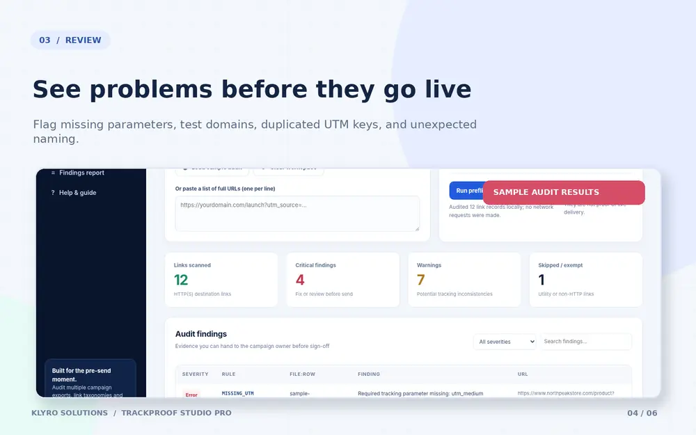

TrackProof Studio Pro: an offline UTM checker for campaign files.
Review tracking links in CSV, HTML, or TXT files before an email campaign goes out. Flag common UTM naming issues, duplicate parameters, and possible staging destinations in one local workflow.
Catch tracking mistakes while you can still fix them.
Review multiple links
Import campaign exports and scan URL patterns across the files, rather than checking each link manually.
Apply your UTM rules
Review missing campaign tags, naming inconsistencies and duplicate tracking parameters.
Export findings
Get CSV, JSON or printable HTML findings for review and a repeatable pre-send checklist.
A practical campaign preflight workspace.
This is an actual TrackProof Studio Pro interface captured using fictional sample data, not a simulated marketing illustration.
- Import CSV exports, HTML email files or TXT files containing URLs.
- Choose approved source, medium and campaign naming rules.
- Review issue counts without uploading campaign files to a remote server.

Actual app interface · Fictional sample campaign

Actual product findings view · Example data
Findings you can work through before launch.
TrackProof flags potential issues, and you decide what to correct. The download includes an offline browser application, optional Node.js command-line tool, sample data, setup instructions and license terms.
- Missing and inconsistent UTM values
- Duplicate query tracking parameters
- Potential staging, preview or placeholder destinations
- Reports in CSV, JSON and printable HTML
Clear boundaries. No surprise promises.
Does TrackProof test whether links actually work?
No. TrackProof checks URLs and campaign files statically. It does not request live sites, follow redirects or confirm a page is available.
Does it validate Google Analytics data collection or email deliverability?
No. It can flag tracking parameter problems in the supplied data, but it does not verify analytics firing, deliverability, email rendering or campaign performance.
Are my campaign files uploaded?
The browser app processes the files locally on your device. No connected marketing account or campaign API is needed.
What files and reports are supported?
Import HTML, CSV and TXT inputs. Export findings in CSV, JSON and printable HTML. An optional Node.js CLI is included for repeatable audits.
For a practical example, read our UTM parameter QA checklist.
Ready to review your tracking links?
TrackProof Studio Pro is a $29 one-time download. It provides review prompts, not a guarantee that a campaign is error-free.
View on Payhip · $29 Back to all products